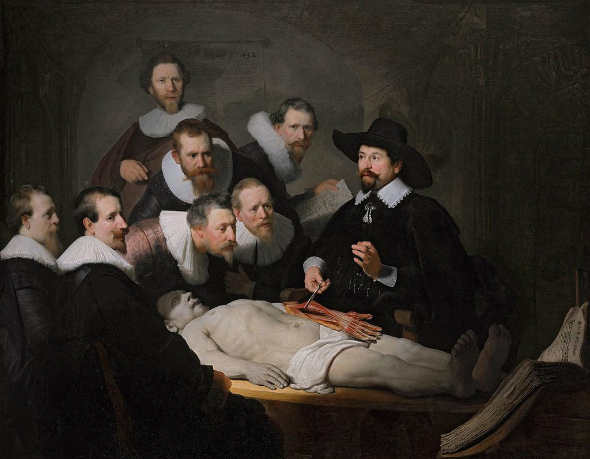

The Anatomy Lesson of Dr Nicolaes Tulp
[a] Artist/ Group/Tribe
The painting "The Anatomy Lesson of Dr Nicolaes Tulp" was created by Rembrandt van Rijn, a celebrated Dutch artist known for his contributions to the Dutch Golden Age of painting. Rembrandt's work is characterized by rich color and profound humanity, setting him apart as one of the greatest artists in history.
[b] Historical and Socio-Cultural Context (Time-frame)
Painted in 1632, this work captures a moment during the Dutch Golden Age, a period of great wealth and cultural achievement in the Netherlands. This was a time when the burgeoning merchant class valued art, science, and intellectualism. Anatomy lessons were public events, indicating the era's fascination with science and the human body.
[c] Symbolism and/or Iconography
The painting symbolizes the intersection of science and art. The group of onlookers watching the dissection reflects society's quest for knowledge. The detailed rendering of the muscles in the cadaver's arm showcases both the scientific and artistic understanding of the human anatomy.
[d] Stylistic Significance (Elements of Art/Principles of Design)
Rembrandt employs chiaroscuro, the contrast between light and dark, to draw attention to Dr. Tulp and the cadaver. This technique highlights important elements and creates depth and focus. Compositionally, the figures form a triangular arrangement, leading the viewer's eye through the scene methodically.
[e] Social / Cultural Inequities
The cadaver on the table was that of Adriaan Adriaanszoon, a convicted criminal, reflecting the practice of using bodies of the disenfranchised for scientific purposes. This practice underscores societal views on morality and class in 17th century Europe, where certain lives were deemed acceptable to exploit for scientific advances.
[f] Description of Disease & Etiology
While the painting focuses on anatomy rather than a specific disease, it illustrates the era's embryonic understanding of the human body. Dissections revealed how muscles functioned and laid the groundwork for the study of disease pathology.
[g] Pathology Signs/Signifiers of Illness
The meticulous attention to the musculature in the cadaver's arm suggests a beginning understanding of the musculoskeletal system. The precise depiction indicates the era's nascent investigation into how diseases might manifest within the structural components of the human body.
[h] Treatment
During the 17th century, medical treatment lacked the scientific rigor we know today. Treatments often included herbal remedies, bloodletting, and rudimentary surgeries. Dissections like the one depicted in Rembrandt's work were vital for advancing understanding that would eventually lead to more effective treatments.
[i] Social Determinants of Illness
The use of a criminal's body reflects how societal positions could determine one's posthumous fate. Access to medical knowledge was limited to the privileged, while the poor had little access to care, influencing who lived and died by natural means or curable diseases.
[j] References and Citations
1. Schama, Simon. "Rembrandt's Eyes." Knopf, 1999.
2. Clark, Kenneth. "Civilisation: A Personal View." BBC Publications, 1969.
3. Gilman, Sander. "Disease and Representation: Images of Illness from Madness to AIDS." Cornell University Press, 1988.
4. Kemp, Martin. "The Science of Art: Optical Themes in Western Art from Brunelleschi to Seurat." Yale University Press, 2000.
5. Hunter, Michael. "The Science and Culture of Seventeenth-century English Dissent: 'Revolution and Continuity'." Boydell & Brewer, 2017.